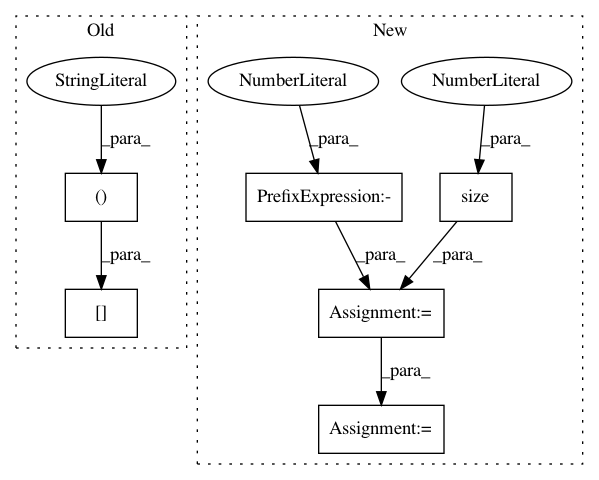

87d57a3d34a1eef2c6ad5519741710e3321f136c,DialogueRNN/model.py,BiE2EModel,forward,#BiE2EModel#,304
Before Change
for t in emotions:
att_em, alpha_ = self.matchatt(emotions,t,mask=umask)
att_emotions.append(att_em.unsqueeze(0))
alpha.append(alpha_[:,0,:])
att_emotions = torch.cat(att_emotions,dim=0)
hidden = F.relu(self.linear(att_emotions))
else:
After Change
qmask = qmask.unsqueeze(1).expand(-1, T1.size(1), -1)
umask = torch.FloatTensor([1,1,1]).type(T1.type())
umask = umask.expand(-1, T1.size(1))
emotions_f, alpha_f = self.dialog_rnn_f(U, qmask) // seq_len, batch, D_e
emotions_f = self.dropout_rec(emotions_f)
rev_U = self._reverse_seq(U, umask)
emotions_b, alpha_b = self.dialog_rnn_r(rev_U, qmask)
emotions_b = self._reverse_seq(emotions_b, umask)
emotions_b = self.dropout_rec(emotions_b)
emotions = torch.cat([emotions_f,emotions_b],dim=-1)
//print(emotions)
emotions = self.dropout_rec(emotions)
//emotions = emotions.unsqueeze(1)
if att2:
att_emotion, _ = self.matchatt(emotions,emotions[-1])
hidden = F.relu(self.linear1(att_emotion))
else:
hidden = F.relu(self.linear1(emotions[-1]))
//hidden = F.relu(self.linear2(hidden))
In pattern: SUPERPATTERN
Frequency: 3
Non-data size: 6
Instances
Project Name: SenticNet/conv-emotion
Commit Name: 87d57a3d34a1eef2c6ad5519741710e3321f136c
Time: 2019-03-19
Author: 40890991+soujanyaporia@users.noreply.github.com
File Name: DialogueRNN/model.py
Class Name: BiE2EModel
Method Name: forward
Project Name: open-mmlab/mmdetection
Commit Name: 60312064e4d7eb62470977bffff75c46f4080a22
Time: 2021-01-24
Author: xvjiarui0826@gmail.com
File Name: mmdet/core/post_processing/bbox_nms.py
Class Name:
Method Name: multiclass_nms
Project Name: ncullen93/torchsample
Commit Name: 943753c968fe7c0cbafc6e44d60f1b28b42e997b
Time: 2017-05-03
Author: ncullen.th@dartmouth.edu
File Name: torchsample/utils.py
Class Name:
Method Name: th_nearest_interp2d